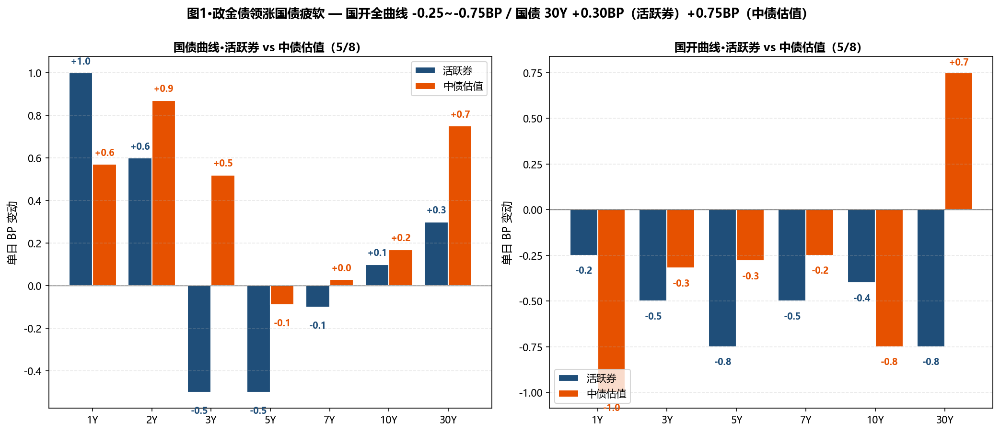
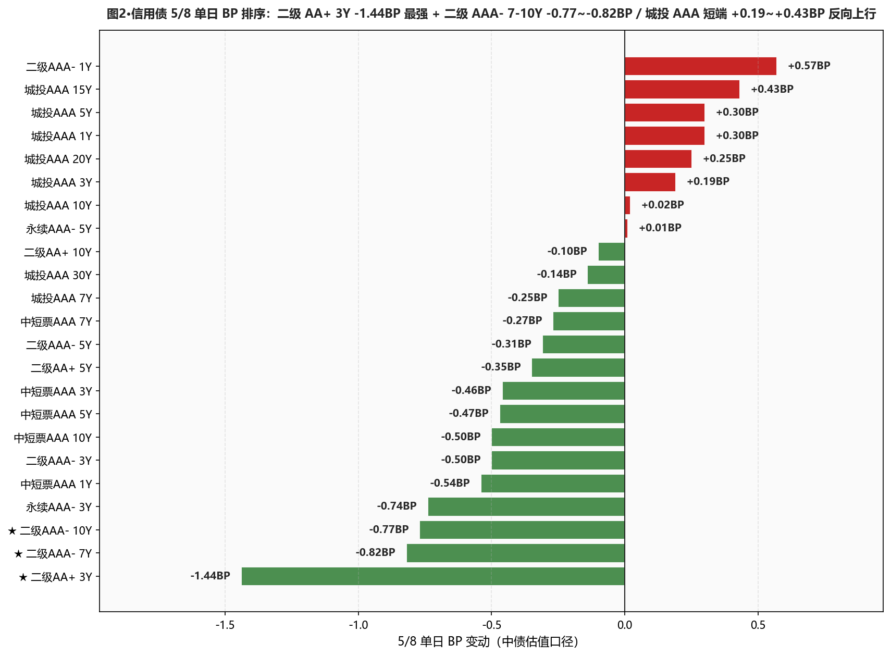
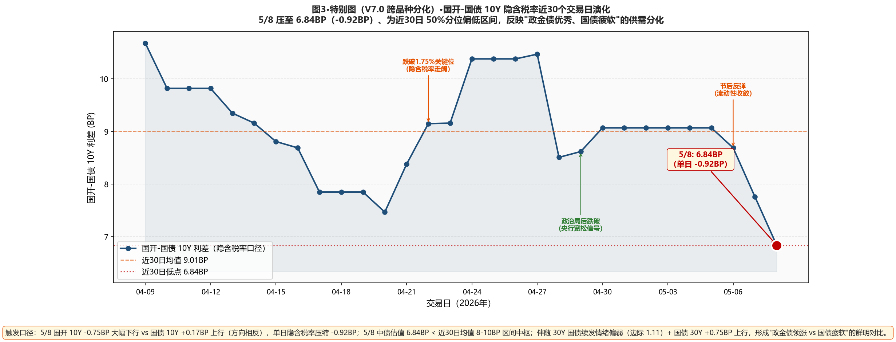

市场定性 政金债领涨 vs 国债疲软（隐含税率压至 6.84BP）+ 30Y 续发情绪偏弱 + 信用债内部分化—— 国开全曲线 -0.25~-0.75BP 下行（1Y -1.00 / 5Y -0.28 / 10Y -0.75 / 30Y +0.75BP），但 国债曲线整体上行：1Y +0.57 / 2Y +0.87 / 10Y +0.17 / 30Y +0.75BP——10Y 国开-国债隐含税率从 7.76BP 压至 6.84BP（-0.92BP，近 30 日低位）； 30Y 续发新券"26超长特别国债02(续发)"加权中标 2.2412%、全场倍数 2.67、边际倍数 1.11（情绪偏弱）——老券 2.2460%（+0.80bp）； 信用债内部分化：二级 AAA- 7Y -0.82 / 10Y -0.77BP 领涨 + 二级 AA+ 3Y -1.44BP 单日最强 + 永续 AAA- 3Y -0.74BP / 中短票全曲线 -0.27~-0.54BP 普跌，但 城投 AAA 短端反向上行：1Y +0.30 / 3Y +0.19 / 5Y +0.30 / 15Y +0.43BP（理财短端赎回压力征兆？）。 资金面继续宽松：DR001 -2.9bp 至 1.2430%（低于 OMO 15.70BP）/ DR007 -3.6bp 至 1.3365%（低于 OMO 6.35BP）；央行 7天逆回购 5亿元零净投放（顺势回归地量）；交易员提示 5/9 调休工作日非银缺席、3天期资金 1.34-1.36% 提前融出。
- ⚠️ 维持 4/29 长端国债 30Y 建仓不补不止30Y 国债活跃券 2.2440%（距 2.23% 上方 1.40BP）/ 中债估值 2.2455%（上方 1.55BP）—— 双口径已突破阈值上方；本行 4/29 试探建仓 30Y 国债 3pct（中债 2.2190%）浮亏扩至约 +2.65BP；30Y 续发边际 1.11 偏弱已落地（无超预期利好）、不补仓、不止损、等下周资金面信号
- ✅ 5Y 二级 AAA- + 永续 AAA- 持仓节奏稳定二级 AAA- 7Y -0.82 / 10Y -0.77BP 领涨信用债 + 永续 AAA- 3Y -0.74BP；本行 4/27-5/8 累计 5Y 二级 28-30% 仓位、5Y 永续 5% 仓位；本日不再加仓节奏维持、5Y 永续可微幅加 1-2pct（5/8 -0.74BP 表现稳定）
- ⚠️ 国开品种凸点继续追不进10Y 国开-国债隐含税率从 7.76BP 进一步压至 6.84BP（-0.92BP）—— 处近 30 日低点区间；昨日已提"等回到 8-10BP 再加"、今日反向走窄 0.92BP；暂不加仓 5-7Y 国开、等回升到 8-10BP 区间再建仓
- ❌ 警惕城投 AAA 短端反向上行（理财赎回征兆？）5/8 城投 AAA 1Y +0.30 / 3Y +0.19 / 5Y +0.30BP 反向上行 —— 与中短票 AAA 全曲线下行（-0.27~-0.54BP）方向相反；可能反映理财赎回压力（理财偏好城投短端票息）或一级供给冲击；不新增 1-3Y 城投 AAA、保持 4/27-5/8 现仓 15-18%、观察 5/9 是否延续
- ⚠️ 杠杆维持 100-105%R-DR007 利差 5.66BP（温和分层 5-15BP 区间）、R-DR001 9.55BP（非银仍偏贵）；DR007 低于 OMO 6.35BP（资金宽松未变但已回归常态）；不上调杠杆、等周一观察跨周后实际资金面
- ① 30Y国债 vs 2.23% ⚠️ 已突破上方：活跃券 2.2440%（上方 1.40BP）/ 中债估值 2.2455%（上方 1.55BP）→长端建仓不补仓不止损、等下周续发后市场观察
- ② 10Y国债 vs 1.75% ⚠️ 已突破上方：活跃券 1.7560%（上方 0.60BP）/ 中债估值 1.7648%（上方 1.48BP）→10Y 站回阻力位上方、暂不再加仓、等回到下方
- ③ R-DR007 利差 >15BP ○ 未触发：当前 5.66BP（温和分层 5-15BP 区间）→维持 100-105% 杠杆
- ④ 10Y中短票AAA-3Y 利差 ≤25BP ○ 未触发：当前 46.37BP（-0.04BP）、距阈值 21.37BP→价差仍宽、止盈点未到
- ⑤ 30Y-10Y 城投AAA 利差 ≤25BP ○ 未触发：当前 30.75BP（-0.16BP）、距阈值 5.75BP→小幅压缩、城投 30Y -0.14BP 微幅下行
A 段·详细数据
① 资金面 Wind EDB API + Wind 综述 PDF
资金面继续宽松回归常态——DR001 加权 -2.90BP 至 1.2430%（低于 OMO 15.70BP）/ DR007 加权 -3.59BP 至 1.3365%（低于 OMO 6.35BP）；非银资金成本：R001 +0.00BP 至 133.85%（实际 1.3385、与 5/7 持平）/ R007 +0.00BP 至 139.31%；R-DR007 利差 5.66BP（温和分层 5-15BP 区间）、R-DR001 9.55BP（非银仍偏贵 9-10BP）。NCD AAA 1Y/3M 双双下行（1Y -0.50BP 至 1.4450% / 3M -0.49BP 至 1.3700%）。央行 5/8 公开市场以固定利率 数量招标方式开展 5亿元 7天逆回购、利率 1.40%、单日实现净投放 5亿元（无逆回购到期、零净投放回归地量）。X-repo 隔夜报价 1.20%（前日 1.26%、再回落 6BP），供给充足；非银抵押信用债或存单融入隔夜资金报价 1.31%-1.35% 区间。5/9 调休工作日提示：非银缺席、3天期资金报价集中 1.34%-1.36%（提前融出、流动性观察点）。
| 指标 | 5/7 | 5/8 | BP |
|---|---|---|---|
| DR001 (%) | 1.2720 | 1.2430 | -2.90BP |
| DR007 (%) | 1.3724 | 1.3365 | -3.59BP |
| R001 (%) | 1.3385 | 1.3385 | +0.00BP |
| R007 (%) | 1.3931 | 1.3931 | +0.00BP |
| NCD AAA 1Y (%) | 1.4500 | 1.4450 | -0.50BP |
| NCD AAA 3M (%) | 1.3749 | 1.3700 | -0.49BP |
② 利率债 — 中债估值 中债估值 xlsx
呈现"政金债领涨 + 国债疲软"鲜明分化：国开全曲线下行 — 1Y -1.00 / 3Y -0.32 / 5Y -0.28 / 7Y -0.25 / 10Y -0.75BP（仅 30Y +0.75BP 跟随国债 30Y 上行）；国债曲线整体上行 — 1Y +0.57 / 2Y +0.87 / 10Y +0.17 / 30Y +0.75BP；10Y 国开-国债隐含税率从 7.76BP 急速压缩至 6.84BP（-0.92BP，近 30 日低位）—— 反映"政金债优秀、国债低迷"的供需分化；30Y-10Y 国债期限利差 47.49 → 48.07BP（+0.58BP，继续走阔）。
| 品种 | 5/7 (%) | 5/8 (%) | BP |
|---|---|---|---|
| 国债 1Y | 1.1814 | 1.1871 | +0.57BP |
| 国债 2Y | 1.2721 | 1.2808 | +0.87BP |
| 国债 3Y | 1.2890 | 1.2942 | +0.52BP |
| 国债 5Y | 1.4865 | 1.4856 | -0.09BP |
| 国债 7Y | 1.6387 | 1.6390 | +0.03BP |
| 国债 10Y | 1.7631 | 1.7648 | +0.17BP |
| 国债 15Y | 2.0843 | 2.0852 | +0.09BP |
| 国债 20Y | 2.2650 | 2.2650 | +0.00BP |
| 国债 30Y | 2.2380 | 2.2455 | +0.75BP |
| 国开 1Y | 1.3841 | 1.3741 | -1.00BP |
| 国开 3Y | 1.5386 | 1.5354 | -0.32BP |
| 国开 5Y | 1.6411 | 1.6383 | -0.28BP |
| 国开 7Y | 1.7847 | 1.7822 | -0.25BP |
| 国开 10Y | 1.8407 | 1.8332 | -0.75BP |
| 国开 30Y | 2.3690 | 2.3765 | +0.75BP |
③ 利率债 — 活跃券 DM 查债通 + Wind 综述
活跃券呈现"国债 30Y 老券承压 + 国开全曲线领涨"分化：30Y 国债老券"26超长特别国债02"+0.80BP 报 2.2460%（盘中一度上行近 1bp、续发偏弱情绪传导）；DM 查债通显示 30Y 国债综合 +0.30BP 报 2.2440%（含续发新券与老券混合、距 2.23% 上方 1.40BP）；10Y 国债"26附息国债05"+0.10BP 报 1.7560%（距 1.75% 上方 0.60BP）；10Y 国开"25国开20"-0.40BP 报 1.8540% / 国开 5Y -0.75 / 7Y -0.50 / 30Y -0.75BP（全曲线领涨）。国债期货收盘多数上涨 — 30Y 主连持平 112.360 / 10Y +0.03% 报 108.590 / 5Y +0.04% 报 106.205。
| 品种 | 5/8 收盘 (%) | BP |
|---|---|---|
| 国债 1Y | 1.1850 | +1.00BP |
| 国债 3Y | 1.4050 | -0.50BP |
| 国债 5Y | 1.4400 | -0.50BP |
| 国债 7Y | 1.6280 | -0.10BP |
| 国债 10Y (26附息国债05) | 1.7560 | +0.10BP |
| 国债 30Y (26超长特别国债02 老券+0.80报2.2460) | 2.2440 | +0.30BP |
| 国开 5Y | 1.5900 | -0.75BP |
| 国开 7Y | 1.7325 | -0.50BP |
| 国开 10Y (25国开20) | 1.8540 | -0.40BP |
| 国开 30Y | 2.1100 | -0.75BP |
④ 信用债 — 中债估值 中债估值 xlsx
呈现"二级永续领涨 + 城投 AAA 短端反向上行"分化： ★ 二级 AA+ 3Y -1.44BP（信用债 5/8 单日最强）/ 二级 AAA- 7Y -0.82 / 10Y -0.77BP 长端领涨 / 二级 AAA- 3Y -0.50BP / 永续 AAA- 3Y -0.74BP—— 与 4/27-5/7 累计加仓策略一脉相承； 中短票 AAA 全曲线 -0.27~-0.54BP 普跌（1Y -0.54 / 3Y -0.46 / 5Y -0.47 / 7Y -0.27 / 10Y -0.50BP）； ★ 城投 AAA 短端反向上行 — 1Y +0.30 / 3Y +0.19 / 5Y +0.30 / 15Y +0.43 / 20Y +0.25BP（与中短票 AAA 同评级方向相反、仅 7Y -0.25 / 10Y +0.02 / 30Y -0.14BP 微幅下行）； 城投短端反向是否反映理财赎回征兆是后续重点观察（理财短端最偏好城投票息）。
| 品种 | 5/7 (%) | 5/8 (%) | BP |
|---|---|---|---|
| 中短票AAA 1Y | 1.5150 | 1.5096 | -0.54BP |
| 中短票AAA 3Y | 1.7309 | 1.7263 | -0.46BP |
| 中短票AAA 5Y | 1.8778 | 1.8731 | -0.47BP |
| 中短票AAA 7Y | 2.0632 | 2.0605 | -0.27BP |
| 中短票AAA 10Y | 2.1950 | 2.1900 | -0.50BP |
| ★ 城投AAA 1Y | 1.5181 | 1.5211 | +0.30BP |
| ★ 城投AAA 3Y | 1.7399 | 1.7418 | +0.19BP |
| ★ 城投AAA 5Y | 1.8775 | 1.8805 | +0.30BP |
| 城投AAA 7Y | 2.0427 | 2.0402 | -0.25BP |
| 城投AAA 10Y | 2.2248 | 2.2250 | +0.02BP |
| 城投AAA 15Y | 2.3488 | 2.3531 | +0.43BP |
| 城投AAA 20Y | 2.4809 | 2.4834 | +0.25BP |
| 城投AAA 30Y | 2.5339 | 2.5325 | -0.14BP |
| 二级AAA- 1Y | 1.5221 | 1.5278 | +0.57BP |
| 二级AAA- 3Y | 1.7914 | 1.7864 | -0.50BP |
| 二级AAA- 5Y | 1.9727 | 1.9696 | -0.31BP |
| ★ 二级AAA- 7Y | 2.1675 | 2.1593 | -0.82BP |
| ★ 二级AAA- 10Y | 2.2932 | 2.2855 | -0.77BP |
| ★ 二级AA+ 3Y | 1.8153 | 1.8009 | -1.44BP |
| 二级AA+ 5Y | 2.0105 | 2.0070 | -0.35BP |
| 二级AA+ 10Y | 2.2958 | 2.2948 | -0.10BP |
| 永续AAA- 3Y | 1.8169 | 1.8095 | -0.74BP |
| 永续AAA- 5Y | 1.9826 | 1.9827 | +0.01BP |
B 段·今日关键事件
① 30Y 续发情绪偏弱 — 边际倍数仅 1.11：财政部今日发行 30 年期固息债 "26超长特别国债02(续发)"，加权中标收益率 2.2412%、全场倍数 2.67、边际倍数 1.11；中标利率 2.52%（去年同口径）→ 今年 2.24% — 但边际倍数 1.11 显著偏低；高于"25特3"前一日收盘价约 9BP（去年同口径 8BP），反映一级配置盘承接热情有限；老券"26超长特别国债02"+0.80BP 报 2.2460%（盘中一度上行近 1bp）。
② 政金债 vs 国债隐含税率压至 6.84BP：5/8 国开 10Y -0.75BP vs 国债 10Y +0.17BP（方向相反、单日分化 0.92BP）；10Y 国开-国债隐含税率从 7.76BP 压至 6.84BP（-0.92BP）— 近 30 日低位；交易员强调"政金债优秀、国债低迷"是当日核心矛盾。
③ 央行 7 天逆回购 5 亿元零净投放 — 流动性顺势回归地量：5/6 -2669 亿 + 5/7 -992 亿后、5/8 5 亿元 7 天逆回购、单日零净投放（无到期）；DR001 加权 1.243%（低于 OMO 15.7BP）/ DR007 1.3365%（低于 OMO 6.35BP）；交易员评论："目前债市对流动性收敛的忧虑暂时缓解，缺少消息刺激下、长债收益率上下动力皆不足、短期内窄幅震荡可能性较大"；央行 4 月国债买卖净增量环比减少（公告口径，影响有限）。
④ 5/9 调休工作日特别提示：5/9（周六）调休工作日、银行间市场照常交易、但非银机构缺席、3 天期资金融出明显增多、报价集中 1.34%-1.36% 附近；这是流动性周内异常窗口、关注非银杠杆机构的提前融出节奏。
⑤ A 股震荡微跌 — 商业航天 / PCB 强势 / 半导体调整：上证 -0.5%（震荡微跌）/ 创业板 -0.96% / 北证 50 +2.24% / 科创 50 -2.29% / 万得全 A +0.01%；A 股成交连续 3 日突破 3 万亿；商业航天概念股集体涨停（航天动力、航天发展等 10 余股封板）+ PCB 概念股再度走强（山东玻纤 7天 4 板、宝鼎科技 2 连板）；半导体产业链调整、电池产业链普遍下挫；房地产局部活跃、病毒防治概念股异动拉升。
⑥ 中信证券观点 — 曲线易陡难平：4 月底资金利率边际有所抬升、政策利率下调之前当前资金利率水平仍处于利率走廊偏下方位置运行；近期原油价格上行需要警惕通胀读数影响；"在名义增长回升的经济环境下、国债收益率曲线易陡难平"——与本行"曲线展望"思路对得上、暗示长端调整风险延续。
C 段·重点可视化（V7.0 固定2张+动态1张）

图1·政金债领涨国债疲软 — 国开全曲线 -0.25~-0.75BP / 国债 30Y +0.30BP（活跃券）+0.75BP（中债估值）

图2·信用债 5/8 单日 BP 排序：二级 AA+ 3Y -1.44BP 最强 + 二级 AAA- 7-10Y -0.77~-0.82BP / 城投 AAA 短端 +0.19~+0.43BP 反向上行

图3·特别图（V7.0 跨品种分化）·国开-国债 10Y 隐含税率近 30 个交易日演化 — 5/8 压至 6.84BP（-0.92BP）、近 30 日低位、反映"政金债优秀、国债疲软"供需分化